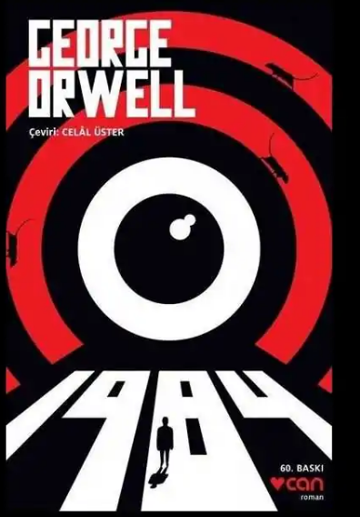
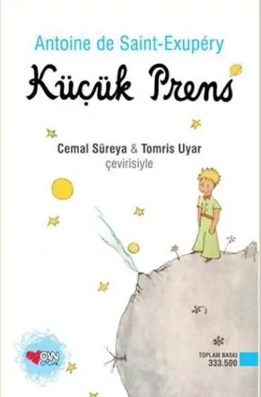
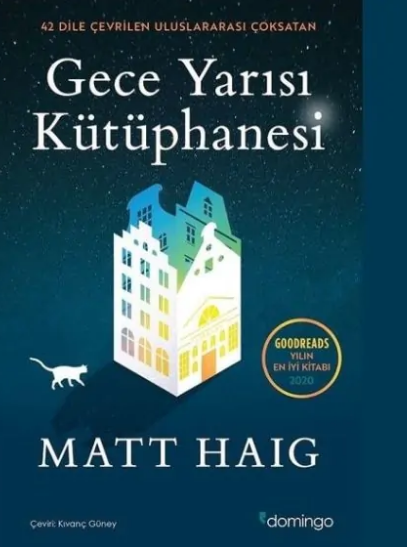

George Orwell’in geleceğe dair bir kâbus senaryosu olarak kurguladığı bu kült eser, bireyselliğin yok edildiği ve zihnin tamamen kontrol altına alındığı totaliter bir dünya düzenini anlatır. Dış Parti üyesi Winston Smith, görevi gereği geçmişi Parti'nin çıkarlarına göre değiştirirken, gerçeği sorgulamaya başlar. Her hareketin tele-ekranlarla izlendiği, insanların birbirini ihbar ettiği bu düzende, Winston ve Julia'nın umut arayışı trajik bir tuzağa dönüşür.
"Düşünmezsen suç işleyemezsin" ilkesiyle hareket eden sistem, bireyin içini boşaltıp onu bir makineye dönüştürene kadar vahşet uygular. Romanın sonunda Winston'ın "2+2=5" sonucuna boyun eğmesi, iktidarın insan mantığı üzerindeki mutlak zaferini simgeler. 1984, sadece bir gelecek tahmini değil, güncelliğini asla yitirmeyen bir "uyarı çığlığı" niteliğindedir.

Uçağı bozularak Sahra Çölü’ne inmek zorunda kalan bir pilotun, uzak bir asteroidden gelen Küçük Prens ile karşılaşmasını konu alan yirmi yedi bölümlük dev bir eserdir. Kendi gezegenindeki tek dostu olan çiçeğine daha faydalı olabilmek amacıyla yola çıkan Küçük Prens, Dünya’ya ulaşana kadar altı farklı gezegeni ziyaret eder.
Bu yolculuk boyunca karşılaştığı karakterler; otorite tutkusunu, kendini beğenmişliği, amaçsız sahip olma hırsını ve sorgulanmayan görev duygusunu temsil eden birer yetişkin sembolüdür. II. Dünya Savaşı’nın yıkıcı etkileri sürerken kaleme alınan bu hikaye, modern toplumun değer yargılarını bir çocuğun masum ve dürüst gözünden sertçe eleştirir. Küçük Prens, "asıl önemli olanın gözle görülemeyeceğini" hatırlatan zamansız bir başyapıttır.

"Yaşamla ölüm arasında sonsuz raflardan oluşan bir kütüphane var." Hayatında üst üste aldığı yanlış kararlar, kaybettiği kedisi ve işinden kovulmasıyla dibe vuran Nora Seed, intihar girişiminin ardından kendisini zamanın 00:00'da durduğu gizemli bir kütüphanede bulur. Buradaki her bir kitap, Nora’nın farklı seçimler yapsaydı yaşayabileceği alternatif hayatları temsil etmektedir.
Kütüphaneci Bayan Elm rehberliğinde; ünlü bir rock yıldızı olduğu, olimpiyat yüzücüsü seçildiği veya hayalindeki evliliği yaptığı onlarca hayatı tecrübe eden Nora, her "mükemmel" görünen hayatın kendi trajedilerini barındırdığını fark eder. Pişmanlıklarını telafi etme şansı bulan Nora, sonunda hayatı yaşanılır kılan şeyin kusursuz seçimler değil, yaşama azminin kendisi olduğunu anlar. 42 dile çevrilen bu modern çağ masalı, seçimlerimizin ve olasılıkların bilim kurguyla harmanlandığı büyüleyici bir yolculuktur.